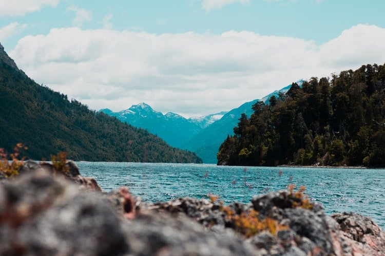
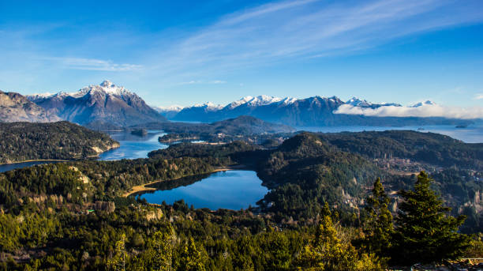

Inicio
Qué Hacer en Verano en Bariloche
¡El verano en Bariloche es una experiencia única que no te podes perder! Si buscas aventura, naturaleza y momentos inolvidables, nuestras excursiones lacustres son la opción perfecta para vos.


